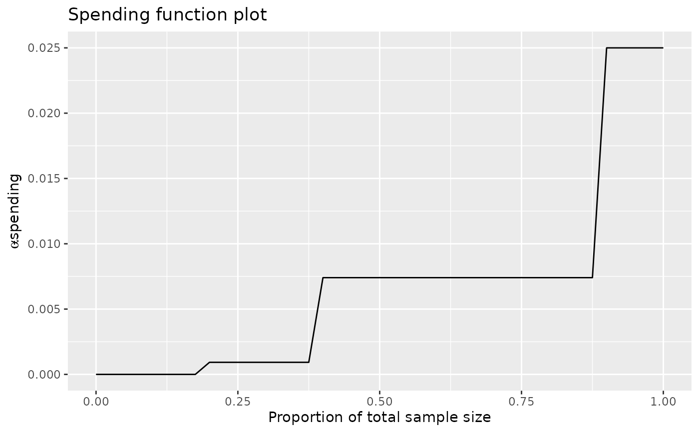

sfLinear.RdThe function sfLinear() allows specification of a piecewise linear
spending function. The function sfStep() specifies a step function
spending function. Both functions provide complete flexibility in setting
spending at desired timepoints in a group sequential design. Normally these
function will be passed to gsDesign() in the parameter sfu for
the upper bound or sfl for the lower bound to specify a spending
function family for a design. When passed to gsDesign(), the value of
param would be passed to sfLinear() or sfStep() through
the gsDesign() arguments sfupar for the upper bound and
sflpar for the lower bound.
Note that sfStep() allows setting a particular level of spending when
the timing is not strictly known; an example shows how this can inflate Type
I error when timing of analyses are changed based on knowing the treatment
effect at an interim.
sfLinear(alpha, t, param) sfStep(alpha, t, param)
| alpha | Real value \(> 0\) and no more than 1. Normally,
|
|---|---|
| t | A vector of points with increasing values from 0 to 1, inclusive. Values of the proportion of sample size or information for which the spending function will be computed. |
| param | A vector with a positive, even length. Values must range from 0
to 1, inclusive. Letting |
An object of type spendfn. The cumulative spending returned
in sfLinear$spend is 0 for t <= 0 and alpha for
t>=1. For t between specified points, linear interpolation is
used to determine sfLinear$spend.
The cumulative spending returned in sfStep$spend is 0 for
t<param[1] and alpha for t>=1. Letting m <-
length(param/2), for i=1,2,...m-1 and param[i]<= t <
param[i+1], the cumulative spending is set at alpha * param[i+m]
(also for param[m]<=t<1).
Note that if param[2m] is 1, then the first time an analysis is
performed after the last proportion of final planned information
(param[m]) will be the final analysis, using any remaining error that
was not previously spent.
See Spending_Function_Overview for further details.
The manual is not linked to this help file, but is available in library/gsdesign/doc/gsDesignManual.pdf in the directory where R is installed.
Jennison C and Turnbull BW (2000), Group Sequential Methods with Applications to Clinical Trials. Boca Raton: Chapman and Hall.
library(ggplot2) # set up alpha spending and beta spending to be piecewise linear sfupar <- c(.2, .4, .05, .2) sflpar <- c(.3, .5, .65, .5, .75, .9) x <- gsDesign(sfu = sfLinear, sfl = sfLinear, sfupar = sfupar, sflpar = sflpar) plot(x, plottype = "sf")x#> Asymmetric two-sided group sequential design with #> 90 % power and 2.5 % Type I Error. #> Upper bound spending computations assume #> trial continues if lower bound is crossed. #> #> Sample #> Size ----Lower bounds---- ----Upper bounds----- #> Analysis Ratio* Z Nominal p Spend+ Z Nominal p Spend++ #> 1 0.474 0.63 0.7342 0.0542 2.67 0.0038 0.0038 #> 2 0.948 1.60 0.9455 0.0363 2.27 0.0117 0.0101 #> 3 1.422 2.11 0.9827 0.0095 2.11 0.0173 0.0111 #> Total 0.1000 0.0250 #> + lower bound beta spending (under H1): #> Piecewise linear spending function with line points = 0.3 0.5 0.65 0.5 0.75 0.9. #> ++ alpha spending: #> Piecewise linear spending function with line points = 0.2 0.4 0.05 0.2. #> * Sample size ratio compared to fixed design with no interim #> #> Boundary crossing probabilities and expected sample size #> assume any cross stops the trial #> #> Upper boundary (power or Type I Error) #> Analysis #> Theta 1 2 3 Total E{N} #> 0.0000 0.0038 0.0096 0.0056 0.019 0.6143 #> 3.2415 0.3291 0.4762 0.0947 0.900 0.8155 #> #> Lower boundary (futility or Type II Error) #> Analysis #> Theta 1 2 3 Total #> 0.0000 0.7342 0.2181 0.0288 0.981 #> 3.2415 0.0542 0.0363 0.0095 0.100# now do an example where there is no lower-spending at interim 1 # and no upper spending at interim 2 sflpar <- c(1 / 3, 2 / 3, 0, .25) sfupar <- c(1 / 3, 2 / 3, .1, .1) x <- gsDesign(sfu = sfLinear, sfl = sfLinear, sfupar = sfupar, sflpar = sflpar) plot(x, plottype = "sf")x#> Asymmetric two-sided group sequential design with #> 90 % power and 2.5 % Type I Error. #> Upper bound spending computations assume #> trial continues if lower bound is crossed. #> #> Sample #> Size ----Lower bounds---- ----Upper bounds----- #> Analysis Ratio* Z Nominal p Spend+ Z Nominal p Spend++ #> 1 0.343 -20.00 0.0000 0.000 2.81 0.0025 0.0025 #> 2 0.685 0.72 0.7652 0.025 20.00 0.0000 0.0000 #> 3 1.028 1.99 0.9765 0.075 1.99 0.0235 0.0225 #> Total 0.1000 0.0250 #> + lower bound beta spending (under H1): #> Piecewise linear spending function with line points = 0.333333333333333 0.666666666666667 0 0.25. #> ++ alpha spending: #> Piecewise linear spending function with line points = 0.333333333333333 0.666666666666667 0.1 0.1. #> * Sample size ratio compared to fixed design with no interim #> #> Boundary crossing probabilities and expected sample size #> assume any cross stops the trial #> #> Upper boundary (power or Type I Error) #> Analysis #> Theta 1 2 3 Total E{N} #> 0.0000 0.0025 0 0.0219 0.0244 0.7638 #> 3.2415 0.1814 0 0.7186 0.9000 0.8947 #> #> Lower boundary (futility or Type II Error) #> Analysis #> Theta 1 2 3 Total #> 0.0000 0 0.7651 0.2105 0.9756 #> 3.2415 0 0.0250 0.0750 0.1000# now do an example where timing of interims changes slightly, but error spending does not # also, spend all alpha when at least >=90 percent of final information is in the analysis sfupar <- c(.2, .4, .9, ((1:3) / 3)^3) x <- gsDesign(k = 3, n.fix = 100, sfu = sfStep, sfupar = sfupar, test.type = 1) plot(x, pl = "sf")#> [1] 34 68 102#> [1] 0.0009259259 0.0074074074 0.0250000000# change timing of analyses; # note that cumulative spending "P(Cross) if delta=0" does not change from cumsum(x$upper$spend) # while full alpha is spent, power is reduced by reduced sample size y <- gsDesign( k = 3, sfu = sfStep, sfupar = sfupar, test.type = 1, maxn.IPlan = x$n.I[x$k], n.I = c(30, 70, 95), n.fix = x$n.fix ) # note that full alpha is used, but power is reduced due to lowered sample size gsBoundSummary(y)#> Analysis Value Efficacy #> IA 1: 29% Z 3.1130 #> N: 30 p (1-sided) 0.0009 #> ~delta at bound 1.7534 #> P(Cross) if delta=0 0.0009 #> P(Cross) if delta=1 0.0905 #> IA 2: 69% Z 2.4662 #> N: 70 p (1-sided) 0.0068 #> ~delta at bound 0.9094 #> P(Cross) if delta=0 0.0074 #> P(Cross) if delta=1 0.6004 #> Final Z 1.9975 #> N: 95 p (1-sided) 0.0229 #> ~delta at bound 0.6322 #> P(Cross) if delta=0 0.0250 #> P(Cross) if delta=1 0.8807# now show how step function can be abused by 'adapting' stage 2 sample size based on interim result x <- gsDesign(k = 2, delta = .05, sfu = sfStep, sfupar = c(.02, .001), timing = .02, test.type = 1) # spending jumps from miniscule to full alpha at first analysis after interim 1 plot(x, pl = "sf")#> [1] 85 4204# simulate 1 million stage 1 sum of 178 Normal(0,1) random variables # Normal(0,Variance=178) under null hypothesis s1 <- rnorm(1000000, 0, sqrt(178)) # compute corresponding z-values z1 <- s1 / sqrt(178) # set stage 2 sample size to 1 if z1 is over final bound, otherwise full sample size n2 <- rep(1, 1000000) n2[z1 < 1.96] <- ceiling(x$n.I[2]) - ceiling(178) # now sample n2 observations for second stage s2 <- rnorm(1000000, 0, sqrt(n2)) # add sum and divide by standard deviation z2 <- (s1 + s2) / (sqrt(178 + n2)) # By allowing full spending when final analysis is either # early or late depending on observed interim z1, # Type I error is now almost twice the planned .025 sum(z1 >= x$upper$bound[1] | z2 >= x$upper$bound[2]) / 1000000#> [1] 0.046449# if stage 2 sample size is random and independent of z1 with same frequency, # this is not a problem s1alt <- rnorm(1000000, 0, sqrt(178)) z1alt <- s1alt / sqrt(178) z2alt <- (s1alt + s2) / sqrt(178 + n2) sum(z1alt >= x$upper$bound[1] | z2alt >= x$upper$bound[2]) / 1000000#> [1] 0.024672